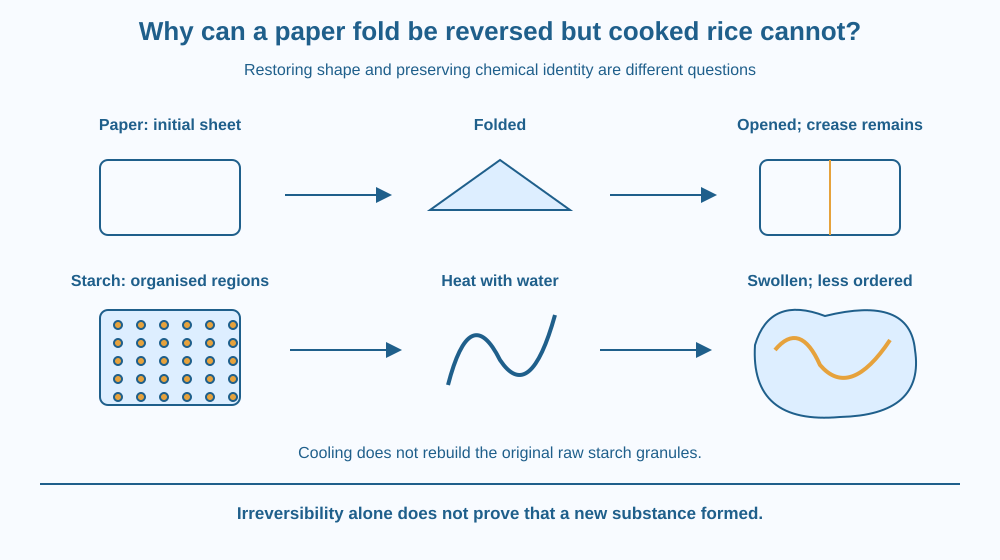

Separate two questions: can a change be easily undone, and has a new substance formed? Use a folded sheet and cooked rice to examine reversibility. Learn why starch gelatinisation makes rice an especially useful warning against oversimplifying physical and chemical changes.
Fold a sheet, then open it. Much of its original shape returns, although the crease remains. Now look at cooked rice. Drying it does not restore the original uncooked grain with the same internal structure.
It is tempting to conclude that paper folding must be physical and rice cooking must therefore be chemical. But the second step in that argument is unreliable. Ease of reversal and chemical identity are different properties.
A sound explanation must describe what happens inside the materials, rather than using “cannot undo it” as the whole test for a chemical change.
A physical change alters features such as shape, arrangement or state without requiring a different chemical substance to be made. A chemical change involves a change in chemical composition, producing different substances. Everyday processes can contain several kinds of change together.
Folding paper mainly changes its geometry. Fibres bend and shift, and a sharp crease can damage or permanently rearrange some of them. Opening the sheet restores its broad outline but does not erase every structural effect. “Reversible” therefore needs a stated meaning: which property is supposed to return?
An intact sheet is still mainly the same paper after folding. Its identity has not become a different material simply because its shape changed. The crease also shows why a physical change need not be perfectly reversible in every detail.
Rice contains large amounts of starch, a material built from long carbohydrate molecules. Within raw grains, starch occurs in granules with organised internal regions. During cooking with water and sufficient heat, these granules take up water and lose much of their original organisation.
This process is called gelatinisation. Granules swell, internal order changes, and some starch molecules can move into the surrounding water. The texture becomes softer. This important part of rice cooking is principally a physical restructuring and hydration process, not simply the production of a new substance called “cooked starch.”
Cooling or drying cooked rice does not neatly rebuild each original granule. Some starch chains can associate again during cooling, changing texture, but the grain does not return to its original uncooked arrangement. An easily observed irreversible change can therefore have a major physical mechanism.
Actual cooking can also involve chemical changes, depending on the ingredients, temperature and duration. Browning and other reactions are possible in some cooking situations. The lesson is not that all cooking is purely physical. It is that irreversibility alone cannot classify an entire process.
To judge a change, ask what evidence supports a change in chemical identity. A colour change or a texture change may be a clue, but neither is a complete definition. Mixtures, states and structures can change their appearance without necessarily becoming entirely new substances.
Use two separate columns headed “Can I restore this property?” and “Has chemical identity changed?” Place observations in both columns instead of forcing them into one yes-or-no rule.
For paper, record that the broad outline can return while the crease persists. For cooked rice, record that the original grain structure is not restored by simple drying. Neither observation by itself names a new substance.
Imagine rebuilding a carefully stacked arrangement after it collapses into a tangled pile. The pieces can remain chemically the same while the original arrangement is difficult to recover. This analogy captures irreversibility without requiring a chemical reaction.
The SVG has two rows. The paper row shows a flat sheet, a folded sheet and an opened sheet with a remaining crease. An arrow back indicates recovery of the broad shape, with a label warning that the crease persists.
The rice row shows organised starch regions before cooking and swollen, less ordered granules after heating with water. A crossed return arrow means that simple cooling does not restore the original structure.
A final caption separates chemical identity from easy reversal. The drawing is a model of the principal starch change, not a complete analysis of every reaction during cooking.

Rice, dal and wheat-based foods can change texture when cooked. Their mixtures contain many components, so one label may hide several mechanisms. Naming gelatinisation provides a specific explanation for starch-rich foods becoming softer when heated with water.
A roti browning on a hot surface raises additional questions about chemical reactions. It should not be treated as identical to rice grains swelling in water. Different cooking conditions produce different processes.
At school, tearing a sheet is another useful example: ordinary reassembly does not make it intact again, yet tearing alone does not necessarily turn its material into a new chemical substance.
Use scrap paper and, if already available, a little cooled cooked rice with an uncooked comparison. Do not cook anything for this activity. Ask an adult before handling food, and do not eat the experimental samples.
No test here identifies all the substances present. The activity challenges an inference, rather than pretending a five-minute kitchen comparison can analyse complex food chemistry.
Breaking a biscuit produces smaller pieces that cannot easily be restored to one intact biscuit. Would difficulty rebuilding it prove that every fragment contains a newly formed substance?
Now consider melting a material and allowing it to cool into a different shape. State which property returns and which does not. Explain why scientists need more precise descriptions than simply saying that a process “goes back.”
What happens during starch gelatinisation?
Answer: C — Water and heat restructure starch granules and change their organisation.
Why does a lasting crease not prove a chemical change?
Answer: A — Persistent physical rearrangement does not by itself establish changed chemical identity.
A biscuit breaks and cannot be neatly rebuilt. What can you conclude?
Answer: B — Difficulty restoring the original structure does not identify a chemical reaction.
Write a correction to this claim: “Every change that cannot be easily reversed is chemical.” Use the paper crease and starch granules as your examples. Include the words structure, identity and evidence.
Your explanation must also avoid the opposite mistake of calling all food preparation physical. End by identifying one question that would require more information about ingredients or cooking conditions before you could classify it confidently.
Sometimes the best science example is useful because it breaks a familiar shortcut. Cooked rice looks very different from raw rice, but a major cause is water-driven reorganisation of starch. Visible change, practical irreversibility and chemical reaction are connected questions, yet none is a perfect substitute for the others.
Easy reversal and chemical identity are different tests; an irreversible structural change does not by itself prove that a new substance formed.